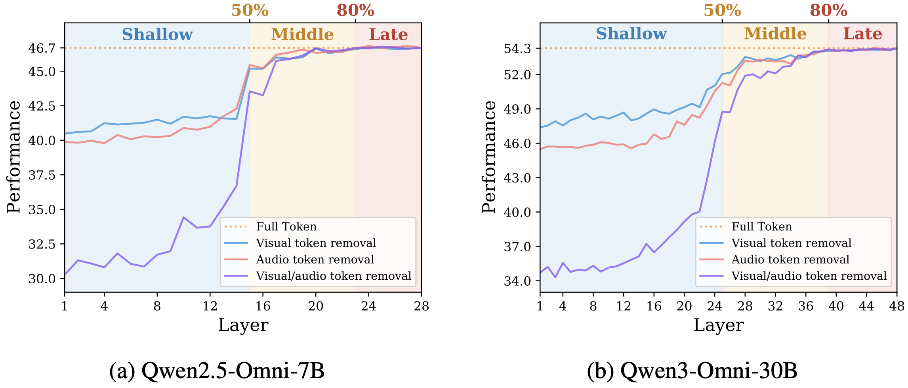
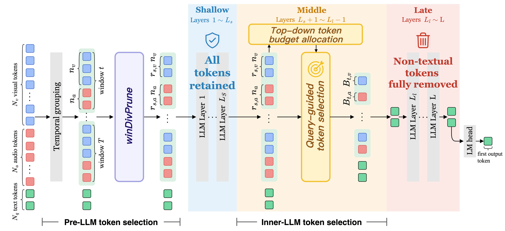
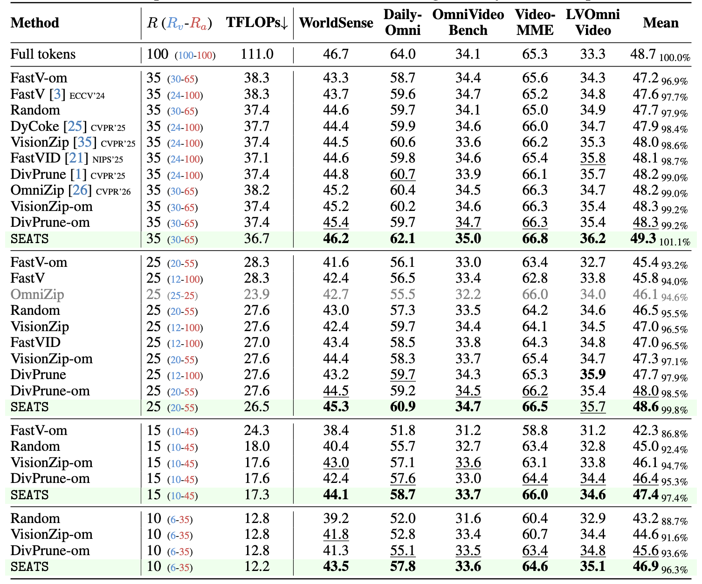
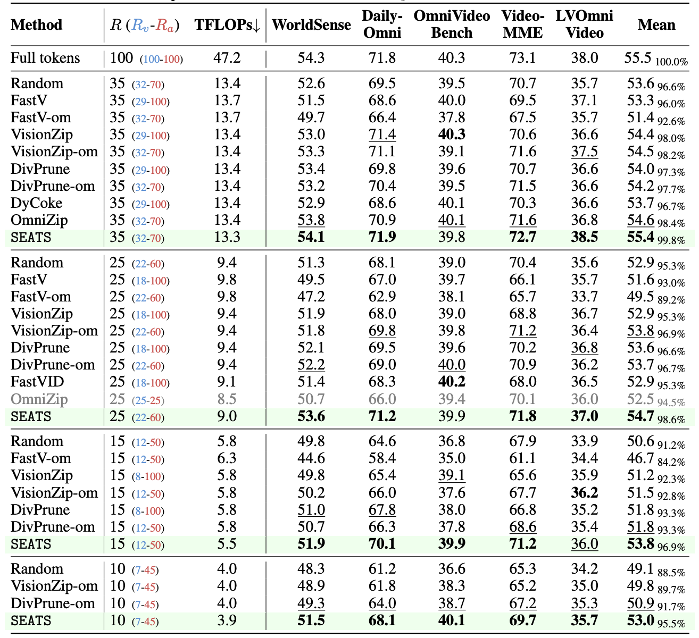

Omni-modal large language models (om-LLMs) achieve unified audio-visual understanding by encoding video and audio into temporally aligned token sequences interleaved at the window level. However, processing these dense non-textual tokens throughout the LLM incurs substantial computational overhead. Although training-free token selection can reduce this cost, existing methods either focus on visual-only inputs or prune om-LLM tokens only before the LLM with fixed per-modality ratios, failing to capture how cross-modal token importance evolves across layers.
To address this limitation, we first analyze the layer-wise token dependency of om-LLMs. We find that visual and audio dependencies follow a block-wise pattern and gradually weaken with depth, indicating that many late-layer non-textual tokens become redundant after cross-modal fusion. Motivated by this observation, we propose SEATS, a training-free, stage-adaptive token selection method for efficient om-LLM inference. Before the LLM, SEATS removes spatiotemporal redundancy via attention-weighted diversity selection. Inside the LLM, it progressively prunes tokens across blocks and dynamically allocates the retention budget from temporal windows to modalities using query relevance scores. In late layers, it removes all remaining non-textual tokens once cross-modal fusion is complete.
Experiments on Qwen2.5-Omni and Qwen3-Omni demonstrate that SEATS effectively improves inference efficiency. Retaining only 10% of visual and audio tokens, it achieves a 9.3x FLOPs reduction and a 4.8x prefill speedup while preserving 96.3% of the original performance.
We examine the effect of removing all visual and/or audio tokens at a specific LLM layer of an om-LLM. A consistent block-wise dependence pattern emerges: shallow layers critically depend on non-textual tokens (removal causes performance collapse), middle layers show moderate dependence (fusion underway), and late layers show no impact (fusion complete).

SEATS is a three-stage method:

Extensive experiments on five audio-visual benchmarks with Qwen2.5-Omni-7B and Qwen3-Omni-30B verify the effectiveness of our method.


@article{xin2025seats,
title={Stage-adaptive Token Selection for Efficient Omni-modal LLMs},
author={Xin, Zijie and Yang, Jie and Zhao, Ruixiang and Wang, Tianyi and Rao, Fengyun and LYU, Jing and Li, Xirong},
journal={arXiv preprint arXiv:2605.20035},
year={2025}
}This research was supported by NSFC (No.62576348), BJNSF (No.L254039), Tencent WeChat Rhino-Bird Focused Research Program, and the Outstanding Innovative Talents Cultivation Funded Programs 2025 of Renmin University of China.